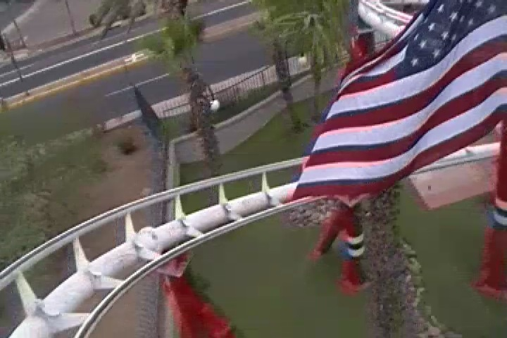
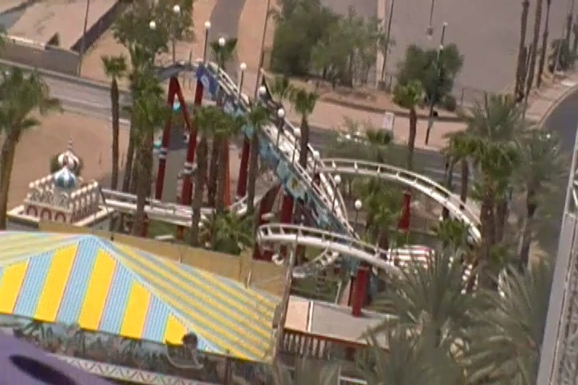
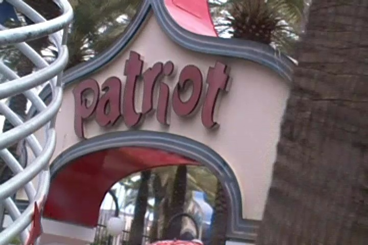

| |
Patriot Review

We're here at Castles'N'Coasters where's we'll be revewing their kiddy coaster. Patriot. Now this is an interesting kiddy coaster. For this is actually the only kiddy coaster that was ever designed by O.D Hopkins, and you certainly know just how weird and strange their roller coasters are. And even by kiddy coasters, they somehow manage to bring their strangeness onboard the ride. So hope in, pull down the lap bar, and let's ride. We head around a turn and head up the lifthill. Not a big deal. Except to our left side, there's the mural, showcasing all of America's coolest characters. We start out with Uncle Sam, move onto the Power Rangers, some random kids, a cowboy with a Western Unicorn, both carrying guns, Kermit & Miss Piggy, Dorthy, Scarecrow, Tin Man & Cowardly Lion from the Wizard of Oz, some hot chicks, a character who's face I recognize, but I can't remember his name, a boy and his dog, King Kong and Ann, Pooh, Piglet, and Eeyore, some bears, some bats, Tom & Jerry, the Incredible Hulk, Frankenstein's Monster, Ariel and Sebastian from the Little Mermaid, Spongebob & Patrick, the Fantastic Four, more hot chicks, and the American Flag. And we're off. We head down a small curved drop. Wee. We head up a small hill and around a tight turn. And you get some LATERALS here. We head up a small hill, go around a turn, and down a helix. And you really slide around. It's a violent little kiddy coaster. And we slam into the brake run, only to go around again. Yeah, it's just a kiddy coaster, but this is a kiddy coaster that really surprised me in just how mean and agressive it was. It's one of the few kiddy coasters I'd actually ride again. Not for credit whoring, but just for fun. So yeah. Definetly give Patriot a ride. It's a fun little kiddy coaster.
4/10
Location: Castles'N'Coasters
Opened: 1992
Built by: O.D Hopkins
Last Ridden: July 13, 2013
Patriot Photos


Home
|